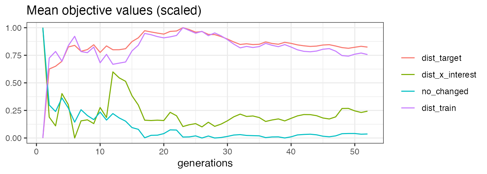
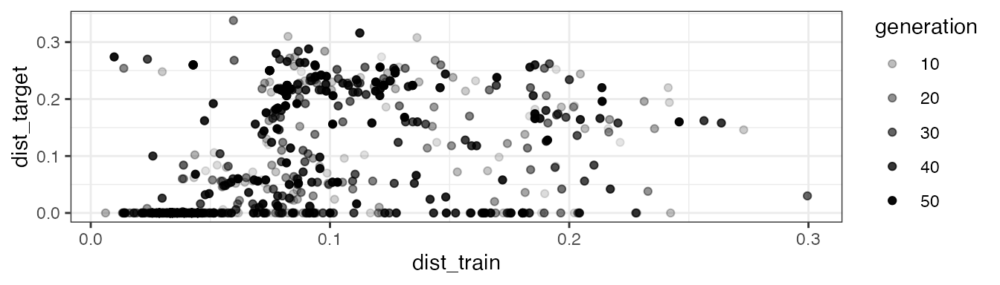

In the following, we explain the counterfactuals workflow for both a classification and a regression task using concrete use cases.
Classification Tasks
To illustrate the counterfactuals workflow for classification tasks, we search for counterfactuals for diabetes-tested patients with MOC (Dandl et al. 2020).
Data: Pima Indians Diabetes Database
As training data, we use the Pima Indians Diabetes Database from the mlbench package. The data set contains 768 observations with 8 features and the binary target variable diabetes.
| Variable | Description |
|---|---|
| pregnant | Number of times pregnant |
| glucose | Plasma glucose concentration (glucose tolerance test) |
| pressure | Diastolic blood pressure (mm Hg) |
| triceps | Triceps skin fold thickness (mm) |
| insulin | 2-Hour serum insulin (mu U/ml) |
| mass | Body mass index |
| pedigree | Diabetes pedigree function |
| age | Age (years) |
| diabetes | Class variable (test for diabetes) |
data(PimaIndiansDiabetes, package = "mlbench") We convert integerish features to the integer data type to ensure that the counterfactuals will only contain integer values for these features (for example no 2.76 pregnancies).
PimaIndiansDiabetes$pregnant = as.integer(PimaIndiansDiabetes$pregnant)
PimaIndiansDiabetes$glucose = as.integer(PimaIndiansDiabetes$glucose)
PimaIndiansDiabetes$age = as.integer(PimaIndiansDiabetes$age)Fitting a model
First, we train a model to predict diabetes, omitting one observation from the training data, which is x_interest.
set.seed(20210816)
rf = randomForest(diabetes ~ ., data = PimaIndiansDiabetes[-499L, ])Setting up an iml::Predictor() object
An iml::Predictor object serves as a wrapper for different model types. It contains the model and the data for its analysis.
predictor = Predictor$new(rf, type = "prob")Find counterfactuals
For x_interest, the model predicts a diabetes probability of 63.4%.
x_interest = PimaIndiansDiabetes[499L, ]
predictor$predict(x_interest)
#> neg pos
#> 1 0.366 0.634Now, I examine which risk factors need to be changed to reduce the predicted diabetes probability to a maximum of 40%.
Since we want to apply MOC to a classification model, we initialize a MOCClassif object. Individuals whose prediction is farther away from the desired prediction than epsilon can be penalized. Here, we set epsilon = 0, penalizing all individuals whose prediction is outside the desired interval. With the fixed_features argument, we can fix non-actionable features to their current value.
moc_classif = MOCClassif$new(
predictor, epsilon = 0, fixed_features = c("pregnant", "age")
)Then, we use the find_counterfactuals() method to find counterfactuals for x_interest. As we aim to find counterfactuals with a predicted diabetes probability of at most 40%, we set the desired_class to "pos" and the desired_prob to c(0, 0.4); in the binary classification case, this is equivalent to setting desired_class to "neg" and desired_prob to c(0.6, 1).
cfactuals = moc_classif$find_counterfactuals(
x_interest, desired_class = "pos", desired_prob = c(0, 0.4)
)The counterfactuals object
The resulting Counterfactuals object holds the counterfactuals in the data field and possesses several methods for their evaluation and visualization.
class(cfactuals)
#> [1] "Counterfactuals" "R6"Printing a Counterfactuals object, gives an overview of the results.
print(cfactuals)
#> 289 Counterfactual(s)
#>
#> Desired class: pos
#> Desired predicted probability range: [0, 0.4]
#>
#> Head:
#> pregnant glucose pressure triceps insulin mass pedigree age
#> 1: 7 148 70 33 145 25.1 0.1630000 55
#> 2: 7 142 70 33 145 25.1 0.1630000 55
#> 3: 7 130 70 33 145 25.1 0.6711319 55The predict() method returns the predictions for the counterfactuals.
head(cbind(cfactuals$data, cfactuals$predict()), 5L)
#> pregnant glucose pressure triceps insulin mass pedigree age neg pos
#> 1: 7 148 70 33 145 25.1 0.1630000 55 0.618 0.382
#> 2: 7 142 70 33 145 25.1 0.1630000 55 0.700 0.300
#> 3: 7 130 70 33 145 25.1 0.6711319 55 0.700 0.300
#> 4: 7 137 70 33 145 25.1 0.1630000 55 0.726 0.274
#> 5: 7 141 70 33 145 25.1 0.1630000 55 0.714 0.286The evaluate() method returns the counterfactuals along with the evaluation measures dist_x_interest, dist_target, nr_changed, and dist_train.
Setting the show_diff argument to TRUE displays the counterfactuals as their difference to x_interest: for a numeric feature, positive values indicate an increase compared to the feature value in x_interest and negative values indicate a decrease; for factors, the counterfactual feature value is displayed if it differs from x_interest.; NA means “no difference” in both cases.
head(cfactuals$evaluate(show_diff = TRUE), 5L)
#> pregnant glucose pressure triceps insulin mass pedigree age dist_x_interest nr_changed dist_train dist_target
#> 1: NA -47 NA NA NA NA NA NA 0.02952261 1 0.05779453 0
#> 2: NA -53 NA NA NA NA NA NA 0.03329146 1 0.05402569 0
#> 3: NA -65 NA NA NA NA 0.5081319 NA 0.06794976 2 0.02948106 0
#> 4: NA -58 NA NA NA NA NA NA 0.03643216 1 0.05088498 0
#> 5: NA -54 NA NA NA NA NA NA 0.03391960 1 0.05339755 0The plot_freq_of_feature_changes() method plots the frequency of feature changes across all counterfactuals.
Setting subset_zero = TRUE removes all unchanged features from the plot.
cfactuals$plot_freq_of_feature_changes(subset_zero = TRUE)
The parallel plot connects the (scaled) feature values of each counterfactual and highlights x_interest in blue.
cfactuals$plot_parallel()
The white dot in the prediction surface plot represents x_interest. All counterfactuals that differ from x_interest only in the selected features are displayed as black dots. The tick marks next to the axes indicate the marginal distribution of the counterfactuals.
cfactuals$plot_surface(feature_names = c("mass", "glucose"))
MOC diagnostics
To evaluate the estimated Pareto front, Dandl et al. (2020) use a hypervolume indicator (Zitzler and Thiele 1998) with a reference point that represents the maximal values of the objectives. The evolution of the hypervolume indicator can be plotted together with the evolution of mean and minimum objective values using the plot_statistics() method.
moc_classif$plot_statistics()
Ideally, one would like the mean value of each objective to decrease over the generations, leading to an increase of the hypervolume. However, there is often a trade-off between the objectives. Here, the mean values of dist_target and dist_train remain relatively constant over the generations, indicating that it is difficult to minimize both objectives simultaneously.
This trade-off can also be seen in the scatter plot—created by the plot_search() method—that visualizes two selected objective values of all individuals. Ideally, one would like to have a point shift to the lower left corner over the generations, which implies better objective values. Here, the points for the objectives dist_train and dist_target are shifted to a middle region, which underlines the difficulty of minimizing both objectives simultaneously.
moc_classif$plot_search(objectives = c("dist_train", "dist_target"))
The exact interdependence between the objectives depends on the task at hand.
Regression Tasks
Finding counterfactuals for regression models is analogous to classification models. In this example, we use WhatIf (Wexler et al. 2019) to search for counterfactuals for housing prices.
Data: Boston Housing Data
As training data, we use the Boston Housing dataset from the mlbench package. The dataset contains 506 observations with 13 features and the (continuous) target variable medv.
data(BostonHousing, package = "mlbench") Fitting a model
First, we train a model to predict medv, again omitting x_interest from the training data.
set.seed(20210713)
rf = randomForest(medv ~ ., data = BostonHousing[-1L, ])Setting up an iml::Predictor() object
Then, we initialize an iml::Predictor object.
predictor = Predictor$new(rf)Find counterfactuals
For x_interest, the model predicts a median housing value of 28.32.
x_interest = BostonHousing[1L, ]
predictor$predict(x_interest)
#> pred
#> 1 28.32244Since we want to apply WhatIf to a regression model, we initialize a WhatIfRegr object. The argument n_counterfactuals specifies the number of counterfactuals to return.
whatif_regr = WhatIfRegr$new(predictor, n_counterfactuals = 5L)Then, we use the find_counterfactuals() method to find counterfactuals for x_interest with a predicted housing value in the interval [30, 32].
cfactuals = whatif_regr$find_counterfactuals(x_interest, desired_outcome = c(30, 32))The counterfactuals object
As a result, we obtain a Counterfactuals object, just like for the classification task.
cfactuals
#> 5 Counterfactual(s)
#>
#> Desired outcome range: [30, 32]
#>
#> Head:
#> crim zn indus chas nox rm age dis rad tax ptratio b lstat
#> 1: 0.10008 0 2.46 0 0.488 6.563 95.6 2.8470 3 193 17.8 396.90 5.68
#> 2: 0.02187 60 2.93 0 0.401 6.800 9.9 6.2196 1 265 15.6 393.37 5.03
#> 3: 0.06888 0 2.46 0 0.488 6.144 62.2 2.5979 3 193 17.8 396.90 9.45References
Dandl, Susanne, Christoph Molnar, Martin Binder, and Bernd Bischl. 2020. “MultiObjective Counterfactual Explanations.” In Parallel Problem Solving from Nature – PPSN XVI, edited by Thomas Bäck, Mike Preuss, André Deutz, Hao Wang, Carola Doerr, Michael Emmerich, and Heike Trautmann, 448–69. Cham: Springer International Publishing.
Wexler, James, Mahima Pushkarna, Tolga Bolukbasi, Martin Wattenberg, Fernanda Viégas, and Jimbo Wilson. 2019. “The What-If Tool: Interactive Probing of Machine Learning Models.” IEEE Transactions on Visualization and Computer Graphics 26 (1): 56–65.
Zitzler, Eckart, and Lothar Thiele. 1998. “Multiobjective Optimization Using Evolutionary Algorithms—a Comparative Case Study.” In International Conference on Parallel Problem Solving from Nature, 292–301. Springer.